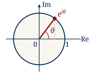

MAT290: Course Syllabus
Advanced Engineering Mathematics
Fall 2026 · University of Toronto

The official Fall 2026 syllabus governs this course. Consult it for complete policies, all lecture sections and tutorial room changes.
Assessment Policies
- Quiz aids: non-programmable calculator only; necessary reference tables are supplied.
- Regrades: request through Quercus within three working days of release, identifying a marking error.
- Missed quizzes: no make-ups. With an approved petition, the first missed quiz receives the average of completed quizzes; later approved absences transfer the missed quiz’s weight to the final.
- Missed final: petition for a deferred examination.
Course Outline
- Complex numbers and elementary complex functions
- Ordinary differential equations
- Laplace transform
- Complex functions and analyticity
- Contour integration
- Complex series
- Residue theory and inverse Laplace transformation
Readings and Preparation
Use Zill, 7th edition, together with the course notes listed on the materials page. Work through the assigned problems before tutorial. The ODE unit uses separate notes, whose section numbers and exercises are identified explicitly in the schedule.
University Policies
Refer to the official syllabus for academic integrity, accessibility and accommodation requirements.